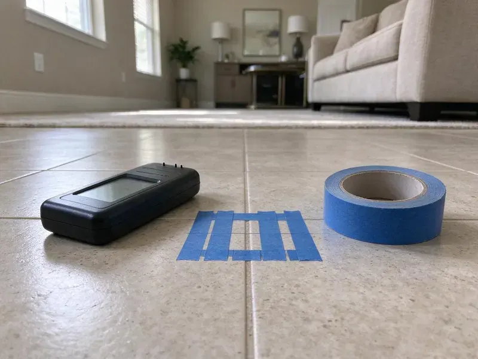

Commercial Plumbing in Worcester, MA
Your tenants and customers should not notice we were there. We work early, late or on weekends across Worcester, MA.
- Maintenance Contracts Available
- Weekend Scheduling
- Same-Day Commercial Service
- Quick Emergency Response

Backflow Test Due in Worcester, MA?
BWM Plumbing schedules work outside your business hours so customers never see a closed sign.
Commercial Plumbing for Massachusetts Businesses in Worcester, MA
BWM Plumbing handles commercial plumbing for businesses across Worcester, MA, from a single storefront to a strip center with a dozen water meters. Commercial work runs on bigger pipe. A 4-inch cast iron main, a 100-gallon water heater and a reduced pressure backflow assembly all need different tools than a house call. We bring the jetter, the camera and the test kit on the first visit.
Work we handle every week:
- Tankless rack and boiler-fed water heater service
- Backflow assembly testing and rebuilds
- Grease interceptor service and kitchen line scouring

Additional Plumbing Maintenance Services in Worcester, MA
Our maintenance and specialty plumbing services in Worcester, MA protect your home year-round and extend the life of every system.


Customers
Why Choose BWM Plumbing for Commercial Plumbing in Worcester, MA?
Commercial systems run harder and under more inspection than any house. Our plumbers know flushometers, interceptors and high-input heaters, and they know how to work in an occupied building without shutting it down. We plan every water shutoff with your manager first.
- Minimal Downtime, Disruptive work happens before opening, after close or on weekends.
- Business Continuity, We isolate the problem area so the rest of the building keeps running during the repair.
- Inspection Ready, Our work meets plumbing, backflow and health department requirements for commercial sites.
Citywide Coverage
Service covers Worcester and the towns around it, including business parks, medical plazas and apartment communities. One number covers every site in a portfolio. We schedule visits by route, which keeps travel time down and lets us test several backflow assemblies on the same day.
Experienced Team
Each member of our commercial crew is licensed and insured, and they stay current on Massachusetts code updates. Continuing education is required. Hundreds of flush valve and backflow rebuilds mean the routine repairs go fast, and the odd ones get worked out carefully.
Safety-First Approach
Safety on a commercial job covers our crew, your staff and your customers. Wet floors get signs and mats. Open ceiling tiles, cut drains and live gas work all get barriers or posted warnings, and our techs wear the protective gear the job calls for, including eye protection and cut-resistant gloves.
Trusted Certified Worcester Plumbing Services Professionals
At BWM Plumbing, we are proud to offer certified plumbing services throughout Worcester, MA. Those papers on the wall mean something. Every repair, install and maintenance visit follows strict safety and quality rules, and the plumbers doing the work carry recognized industry credentials.
Call Us Now PHCC Plumbing Contractor Recognition
PHCC Plumbing Contractor Recognition Better Business Bureau (BBB) Accreditation
Better Business Bureau (BBB) Accreditation Angi Certified Pro
Angi Certified Pro ISO 9001 Quality Management Certification
ISO 9001 Quality Management CertificationWhat Our Commercial Plumbers Do in Worcester, MA
Commercial Fixture and Faucet Repair in Worcester, MA
Commercial faucets and toilets are built heavy, but they still wear. Cartridges leak. We repair and replace sensor faucets, metering faucets, wall-hung toilets, mop sinks and three-compartment sinks, and we stock parts for Sloan, Chicago Faucets, Zurn and T and S Brass. We can also swap in lower-flow aerators that still rinse hands well. A typical fixture repair takes an hour or two.

Commercial Restroom Fixture Repair in Worcester, MA
Restroom calls are the most common commercial work we do. Running flush valves, stuck urinals and dripping sensor faucets usually need a diaphragm, a solenoid or fresh batteries. We stock those. Wall-hung toilets that keep clogging or rocking get a carrier check, since a loose bowl can leak inside the wall. Weak flow at one sink often comes down to a plugged stop valve.
Commercial Plumbing Costs and Maintenance Plans in Worcester, MA
Backflow tests often run $75 to $175 per assembly, and kitchen line jetting usually costs $350 to $900 depending on length and buildup. After-hours calls cost more. A maintenance plan spreads those costs across the year and cuts the number of emergency visits, which are always the most expensive kind of plumbing work for a business. Every plan comes as a written proposal.
Tenant Improvement and Build-Out Plumbing in Worcester, MA
New tenants usually need restrooms moved, a break room added or a kitchen built in a shell space. We work from stamped plans, coordinate rough-in with your general contractor and schedule inspections so the plumbing is never what holds up the opening date. Old lines get capped. We cut abandoned lines back to the main and cap them, so there are no dead legs or sewer gas problems later.
Backflow Prevention Assembly Service in Worcester
A backflow assembly keeps water from your building, including irrigation lines, boiler water and chemical feeds, from flowing back into the public supply. Most providers want a yearly test. Our certified testers check reduced pressure zone assemblies, double check valves and pressure vacuum breakers with calibrated differential gauges, then file the report with your water provider. Failed devices usually need a rebuild kit, not a new valve. That is why the truck carries Watts, Wilkins and Febco kits.
Commercial Pipe Repair and Repiping in Worcester, MA
Older commercial buildings often have galvanized supply lines that are rusted nearly shut, or copper that has pinholed along hot water runs. Patching works for a while. Once leaks start showing up in different spots every few months, a sectional repipe in Type L copper or commercial-grade PEX usually costs less than the next three emergency calls. The first step is mapping the risers and branches. Work gets phased by floor or suite so tenants keep their water most of the day.
Backflow Testing and Certification in Worcester
Each backflow test takes about 30 minutes per assembly and requires a short water shutoff to that line. Plan for a brief outage. Our tester opens each test cock in order, records the check valve and relief valve readings on a calibrated gauge and compares them against the pass limits printed on the test form. We tag every passing device. The provider gets the report from us, and we keep a copy for your next test.

Commercial Water Heater Service in Worcester, MA
Big tank heaters fail in a few common ways: a failed gas valve, a cracked flue baffle, a stuck T and P valve or a tank full of scale. Each sounds different. Our techs test flue draft, check combustion, measure the temperature at the farthest fixture and flush sediment, which together tell us whether to repair the unit or plan its replacement. Tankless units get a descaling flush. Recirculation pumps on long runs get tested as part of the visit.
Commercial Plumbing Near Me in Worcester, MA
Business owners looking for a commercial plumber near Worcester can expect BWM Plumbing to arrive fast. Every truck carries flush valve kits, pressure reducing valve parts, large fittings and backflow gauges for same-visit repairs. Most service calls end without a return trip.
Businesses around Worcester keep calling BWM Plumbing because the same plumbers come back. They remember where the cleanout is hidden, which unit has the touchy shutoff and what the heater was doing last time. Familiar techs finish faster. It also means fewer surprises when a bigger repair comes up, because someone already knows the system.
BWM Plumbing at a Glance
- Fully licensed plumbing team covering Worcester, MA
- 24/7 emergency service with same-day scheduling
- Clear written estimates, no hidden fees
- 4.9-star rated by 434+ Massachusetts customers
Worcester Map
Worcester Information
- Population
- 207,621
- Area codes
- 508/774/978
- Service area
- Worcester and communities within 40 miles
- Nearby
- Leominster, Framingham, Waltham, Newton
Annual backflow tests and grease rules keep business plumbing in Worcester, MA on a fixed schedule. Much of the public water in Massachusetts is soft and slightly acidic, which is easy on fixtures but can gradually wear through copper pipe.
Talk to a Plumber
Call BWM Plumbing for honest, reliable plumbing from people who know the trade in Worcester, MA.
Our Specialized Plumbing Services in Worcester, MA
At BWM Plumbing, we handle the full list of plumbing services across Worcester, MA. From leak detection to full system installs, our team works fast and charges fair prices on homes and commercial properties alike. Here are the core services we offer:


How a Commercial Plumbing Call Works in Worcester, MA
Here is what a commercial service call with BWM Plumbing in Worcester, MA looks like, step by step.
Tell Us What Happened
Call BWM Plumbing at (857) 335-4894 for an emergency or a planned job. We dispatch a technician to your Worcester property with the right parts.
Find the Cause
Our plumber inspects the problem with the right tools and explains what failed and why before quoting it.
Fix and Final Check
With your approval, we make the fix and run the system. You get a report and any maintenance notes.
Frequently Asked Questions About Commercial Plumbing in Worcester
Small repairs in Worcester, MA usually cost $150 to $400. Bigger equipment costs more. A replacement commercial water heater often falls between $2,000 and $8,000 installed, depending on input rating, venting and whether the gas line needs upsizing for the new unit. You get the number before work starts.
Slow floor drains, gurgling toilets and sewer smells point to buildup or damage. A camera inspection shows exactly what is going on.
Yes, commercial repairs and installs include a written warranty on parts and labor. New equipment also carries its factory warranty.
Repeat clogs in the same drain mean a problem in the line, not just a bad day. A sudden jump in the water bill usually means a hidden leak or a stuck flush valve. Discolored water, low pressure upstairs or an intermittent sewer odor deserve a look before they force a closure.
Most installs, replacements and system changes in Worcester need a permit. Small repairs usually do not. We pull the permit, schedule the inspection and meet the inspector on site, so you are not left handling paperwork or holding the door for a city visit.
Scheduled maintenance does most of the work. Drain cleaning, backflow testing and water heater flushing on a calendar catch problems early. Strainers cost almost nothing. Getting kitchen staff to scrape plates and keep fryer oil out of drains cuts grease buildup more than any additive.
Usually, yes, for new fixtures, water heater replacements and changes to the water service or building sewer. Simple repairs often skip the permit. We confirm what your address needs, file for the permit and handle the inspection so the work is recorded with the building department.
Watch for floor drains that gurgle, sewer smells near restrooms and a water bill that jumps without a reason. Low pressure at the far end of the building is another one. Stains on ceiling tiles under restrooms or kitchens often mean a leaking drain or supply line above, and catching it early saves the tile, the drywall and the inventory below.
Hear From Customers Who Hired Our Plumbing Experts

James P.
Our restaurant had a slow leak at the hand sink that was rotting the cabinet base. BWM Plumbing came in at six in the morning before prep, replaced the trap and both supply lines, and was packed up before my first cook clocked in.
Commercial Plumbing · Brookline, MA
Greg S.
I manage a small strip center with six tenants. BWM Plumbing handles our annual backflow testing and fixed a recurring clog in the shared sewer line that had been backing into the nail salon. Their reports come in clean and on time.
Commercial Plumbing · Lowell, MA
Monica A.
Our water bill nearly doubled in one month with no change in how we used water. The tech checked the meter, heard the leak under the hallway with his equipment, and opened a hole about a foot square. Fixed the same day.
Slab Leak Repair · Leominster, MA
Daniel K.
A pipe burst in the garage ceiling at 11 at night. Someone answered on the second ring, and the plumber was in my driveway about fifty minutes later. He shut off the main, cut out the split section, and had water back on before 2 am.
Emergency Plumbing · Leominster, MA
Megan L.
Our upstairs tub drained so slowly that every shower turned into a bath. BWM Plumbing pulled a wad of hair out of the stopper and then snaked the line past the trap. Three months later it still drains fast.
Drain Cleaning · Worcester, MAPaul B.
Our pit pump ran nonstop even in dry weather. The plumber found the check valve was stuck open, so the same water kept cycling back into the pit. New valve, new float switch, done in an hour. It runs quiet now.
Sump Pump · Lowell, MA